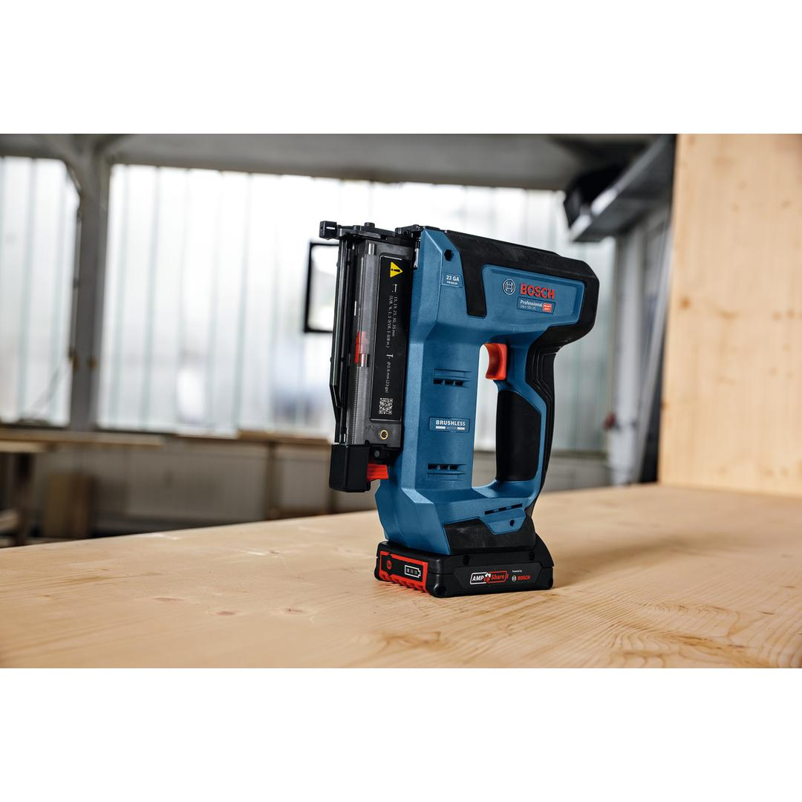
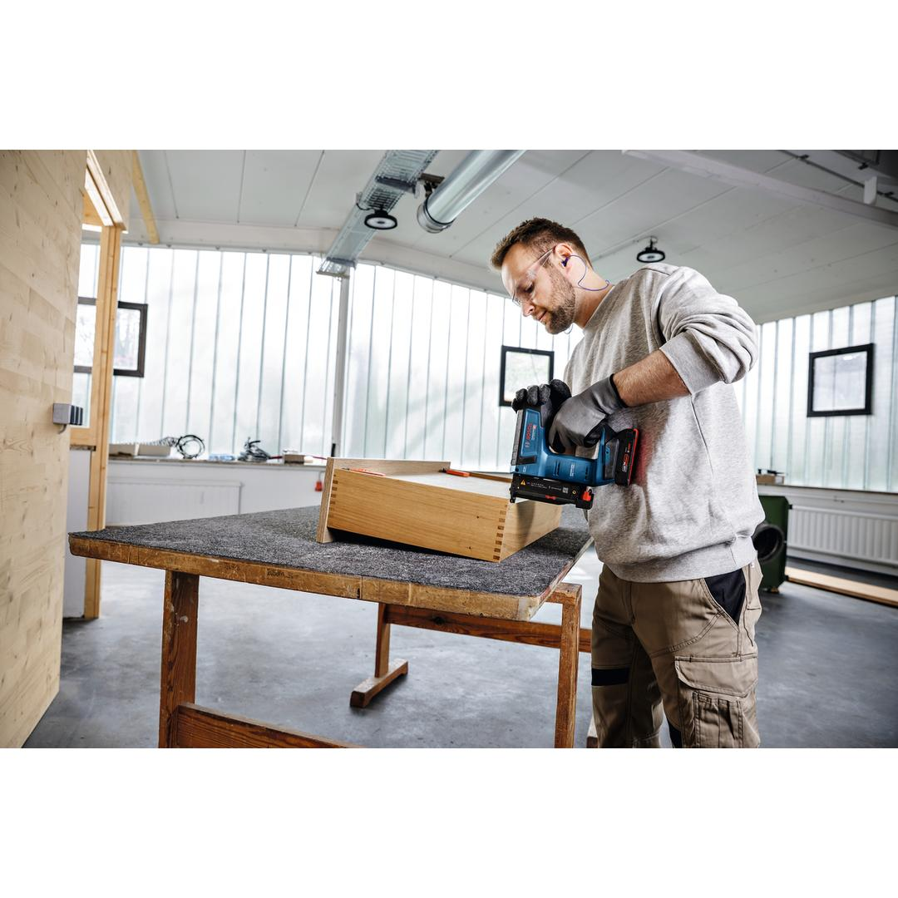
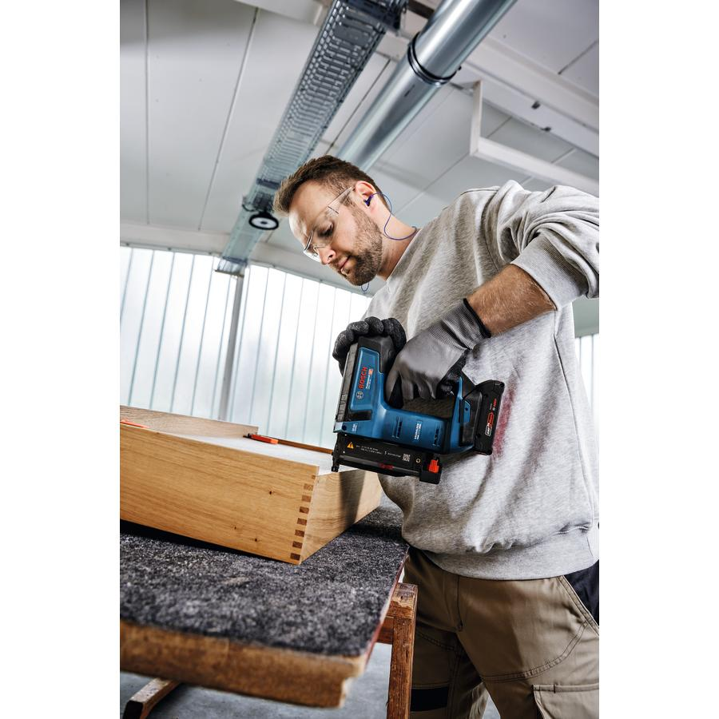
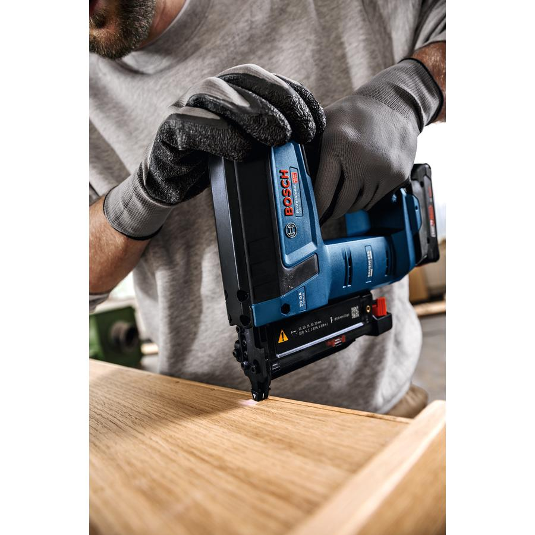
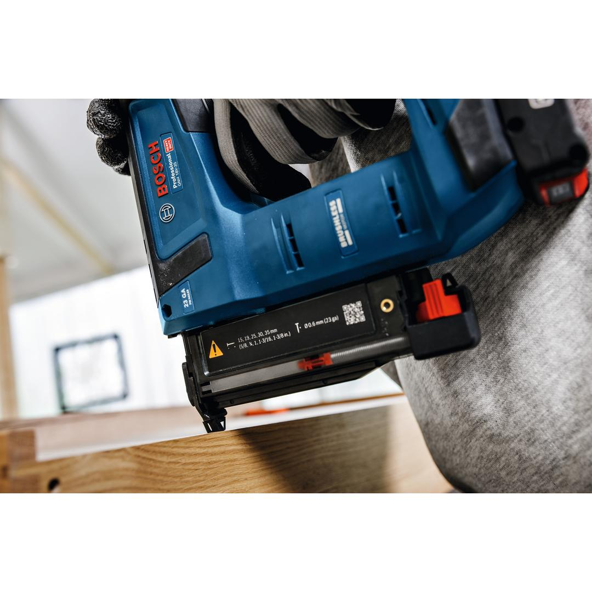
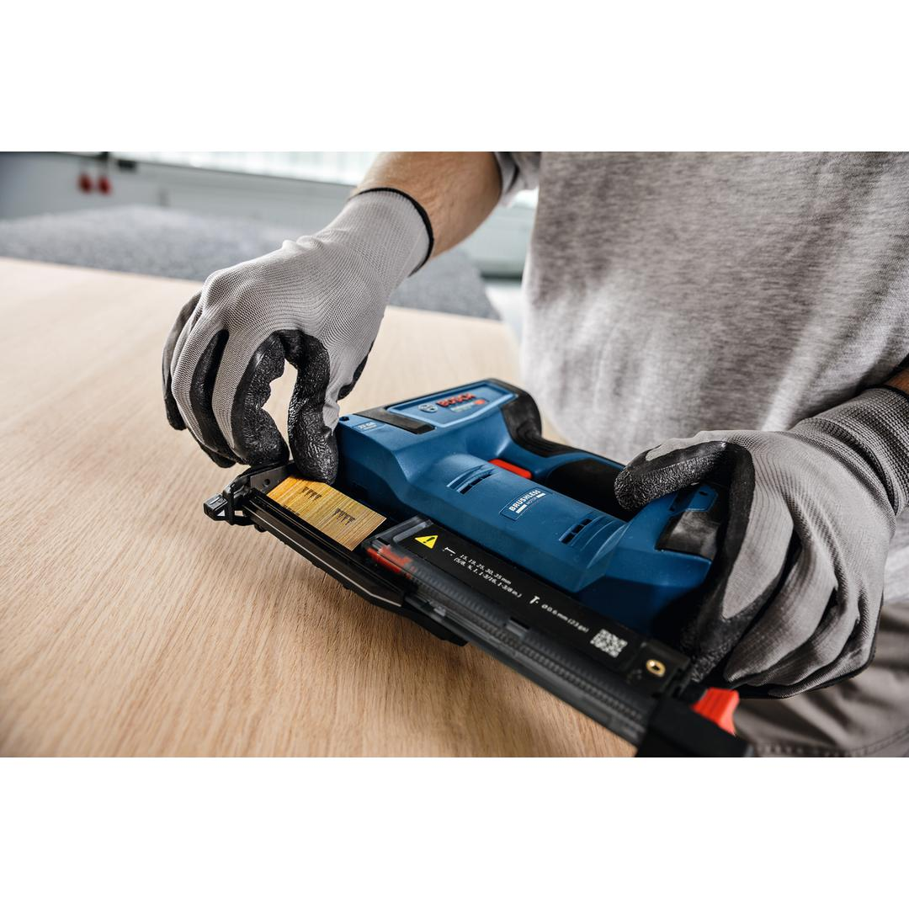
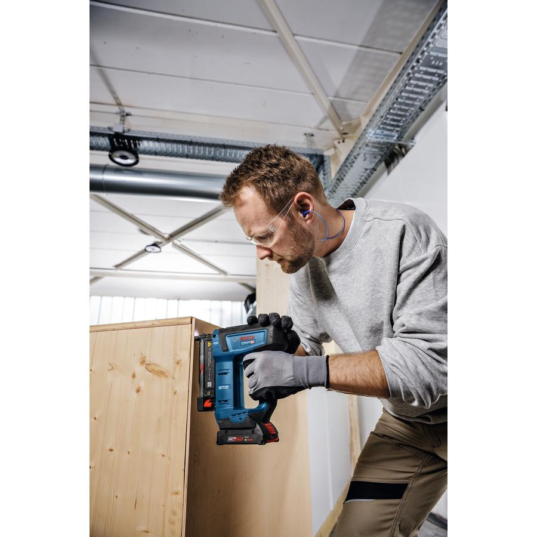
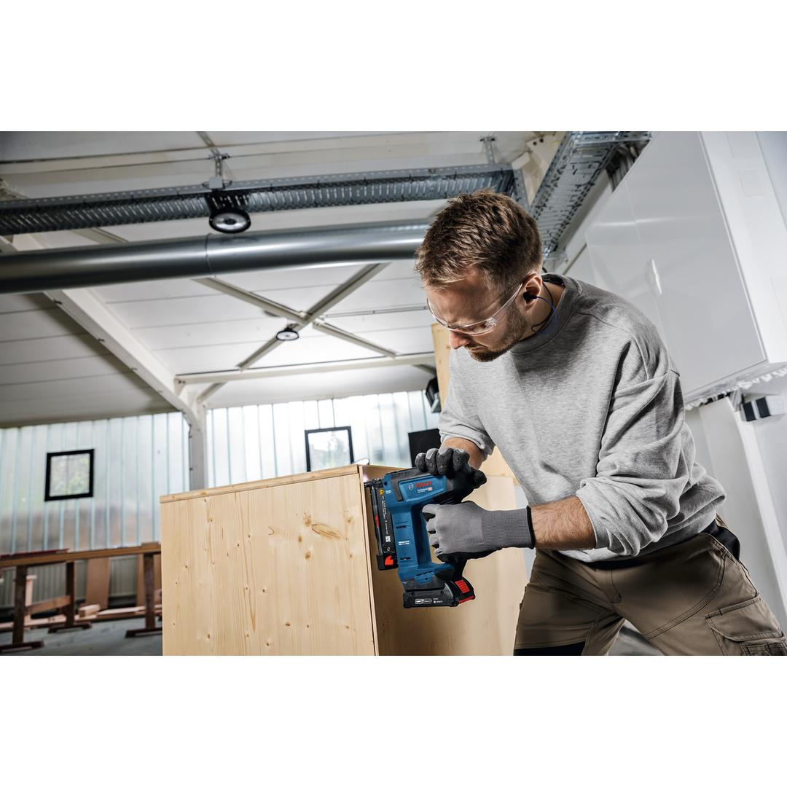
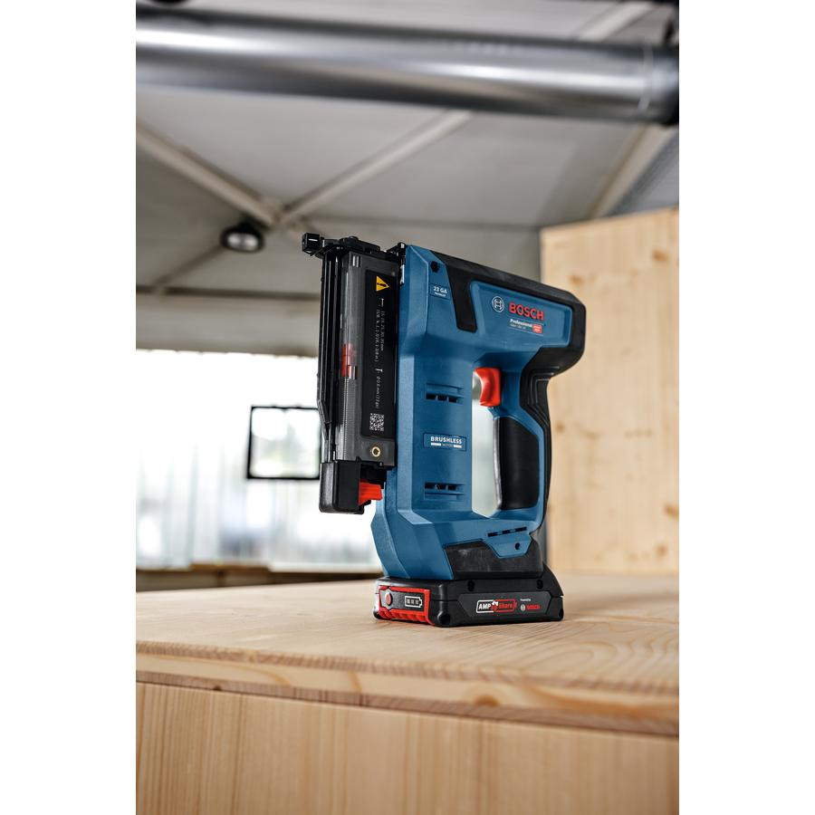
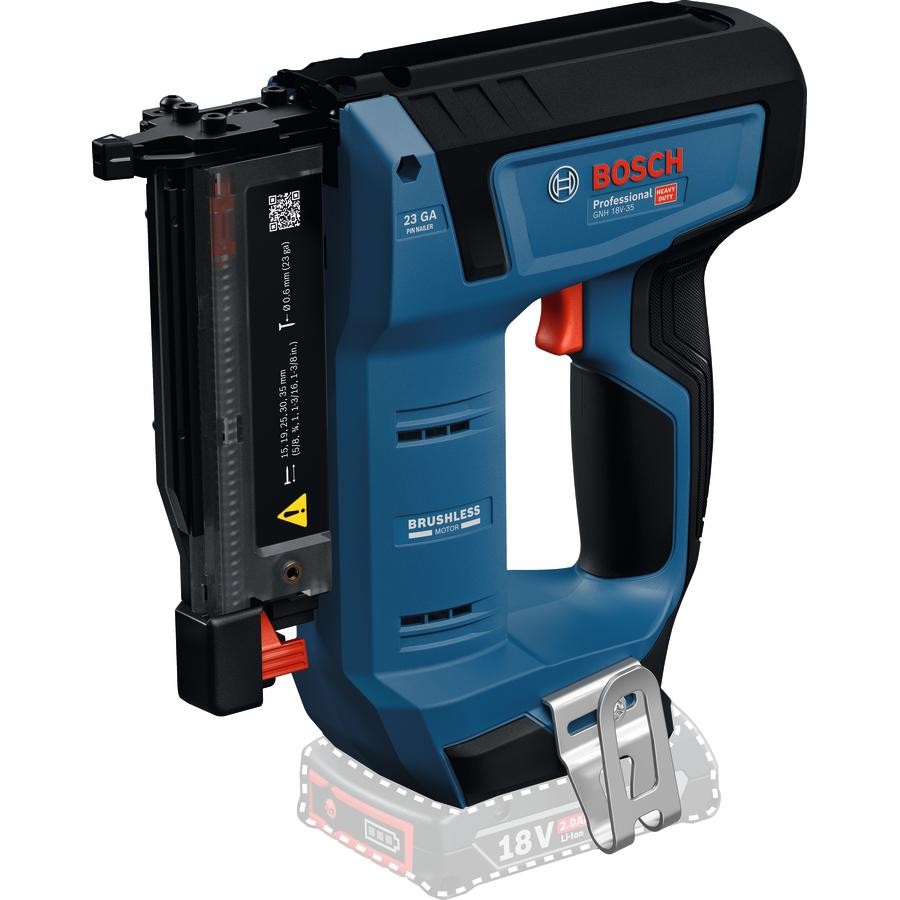

0601482700










| Noise level |
The A-rated noise level of the power tool is typically as follows: Sound pressure level 88 dB(A); Sound power level 99 dB(A). Uncertainty K= 3 dB. |
| Tool dimensions (width) |
81 mm |
| Tool dimensions (length) |
232 mm |
| Tool dimensions (height) |
214 mm |
| Battery voltage |
18.0 V |
| Sound pressure level |
88 dB(A) |
| Sound power level |
99 dB(A) |
| Uncertainty K |
3 dB |
| Collation angle |
0 ° |
| Nail diameter |
0.6 mm |
| Nail length |
15 – 35 mm |
| Nail/Staple type |
Pin |
| Triggering system |
Single sequential actuation + Full sequential actuation |
| Weight excl. battery |
1.7 kg |
| Magazine capacity |
110 Pcs |
| Compatible nails/staples |
Bosch nails |
| BITURBO |
No |
Precise fastening with minimized recoil and maximum consistency
The GNH 18V-35 wood nail gun is the cordless solution for precision fastening that leaves your workpiece mark free thanks to reduced recoil and no-mar pads with different contact areas for various applications. It delivers perfect work results even at odd angles with accurate guiding of the driver blade and pin. And you can sink pins consistently at full power thanks to the brushless motor and optimized coil spring system. Rest assured that your workpiece is protected from damage by the dry fire lock-out which prevents blank firing when the magazine is empty. What’s more, depth setting is quick and easy with this tool’s stepless depth adjustment feature
The GNH 18V-35 is intended for wood applications and can be used for delicate decorative trims and molding on furniture and buildings, fixing glazier beads into furniture or doors/indoor walls. Recommended pins: Bosch PN23 G: 15, 19, 30, 35 mm; 23 ga / 0.6 mm
The tool comes with a contact trigger for both single and full sequential actuation, an LED light, and a belt hook